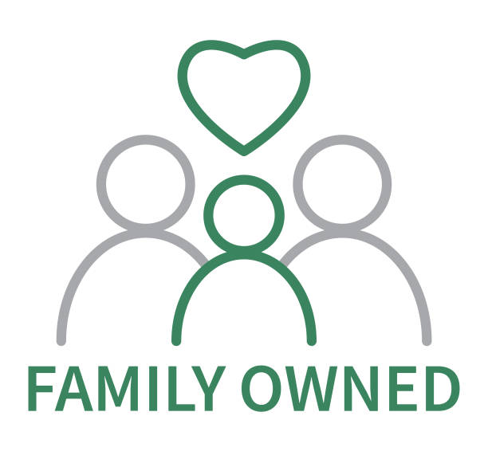
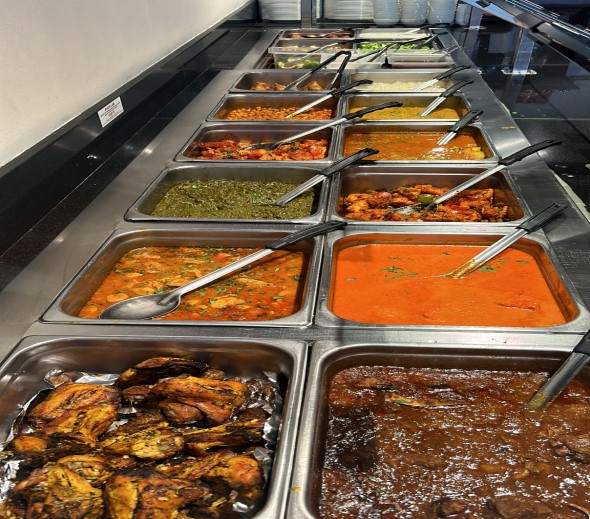
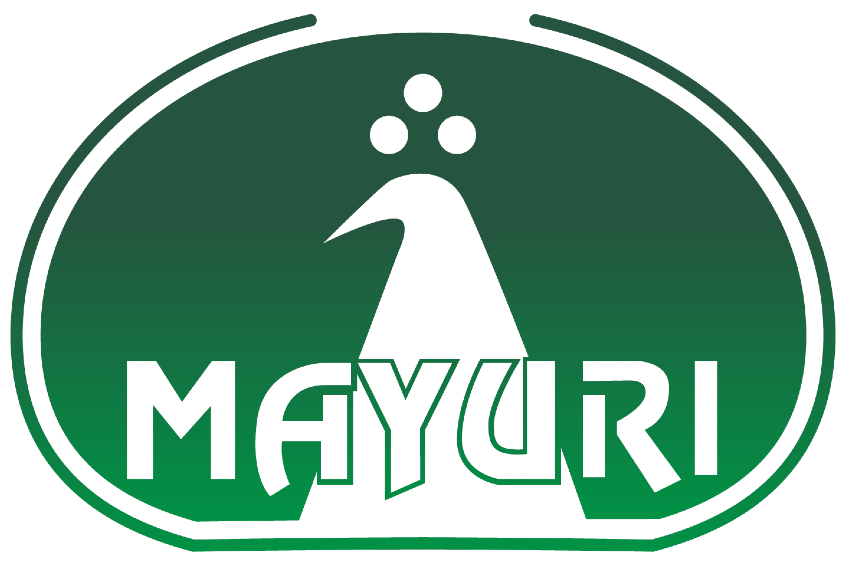

Family Owned Business
Mayuri has been proudly family owned and operated, serving authentic Indian food with warm hospitality and personal care.
Family Owned • 20+ Years in Northern Virginia • Largest Indian Lunch Buffet

Mayuri has been proudly family owned and operated, serving authentic Indian food with warm hospitality and personal care.
For over 20 years, we’ve brought tradition, flavor, and consistency to the Northern Virginia community.

Experience our expansive Indian Lunch Buffet — the largest and most diverse selection of authentic North & South Indian dishes in the region.
Mayuri Indian Restaurant is a family-owned business proudly serving the Northern Virginia community for over 20 years. What started with a simple goal—share authentic Indian flavors with our neighbors—has grown into a local favorite known for warm hospitality, consistent quality, and the region’s largest Indian lunch buffet.
Every day, our kitchen focuses on traditional recipes, fresh ingredients, and bold, balanced spices—so whether you’re joining us for lunch, bringing family for dinner, or catering an event, you can expect the same care in every dish.
